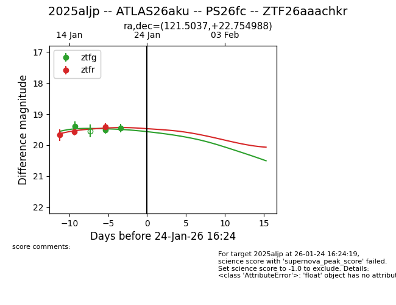
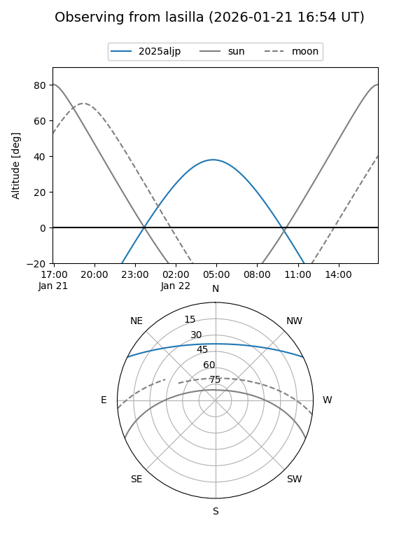
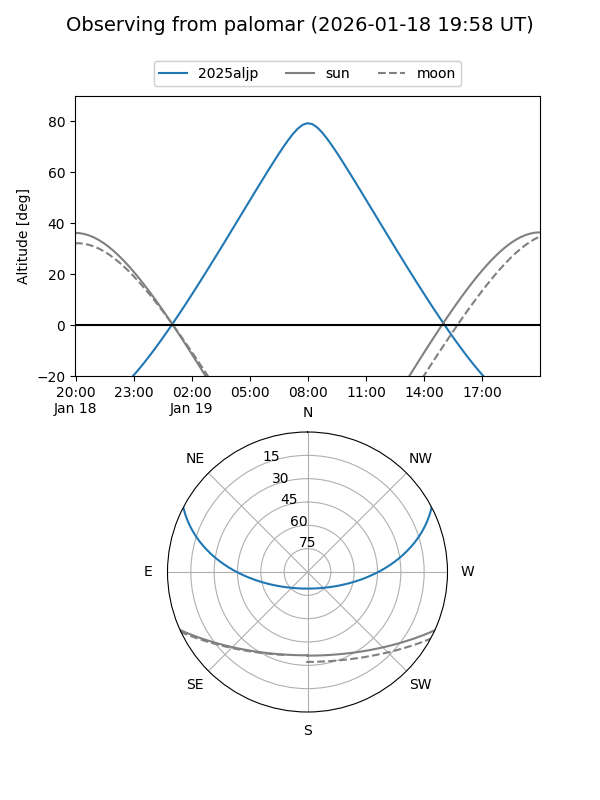
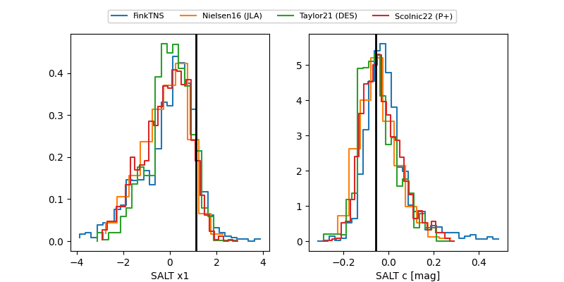

2025aljp
Target 2025aljp at 2026-01-19 20:00
Aliases and brokers:
FINK: link
Lasair: link
ALeRCE: link
TNS: link
YSE: link
alt names
ZTF26aaachkr (ztf,fink_ztf)
2025aljp (tns,yse)
ATLAS26aku (atlas)
PS26fc (panstarrs)
Coordinates:
equatorial (ra, dec) = 121.5037,+22.75499
equatorial (HMS+DMS) = 08:06:00.89,+22:45:17.96
galactic (l, b) = (199.4296,+26.02393)
Flags:
Photometry:
last ztfg=19.52, ztfr=19.41
2 ztfg, 3 ztfr detections
Lightcurve

Visibility


Additional plots
